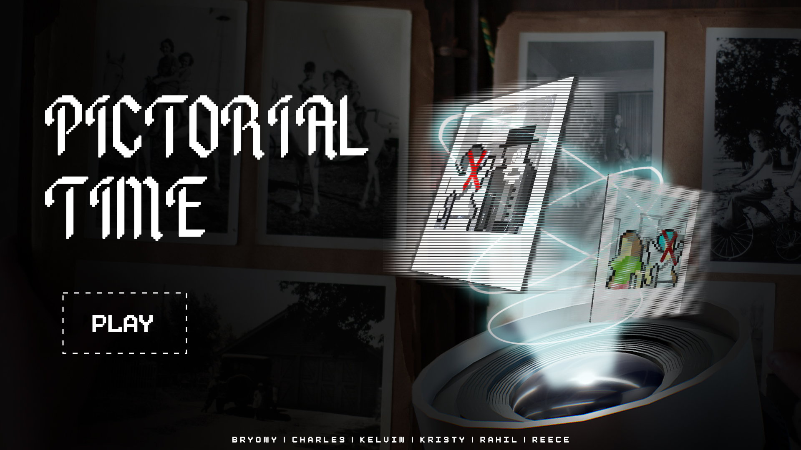
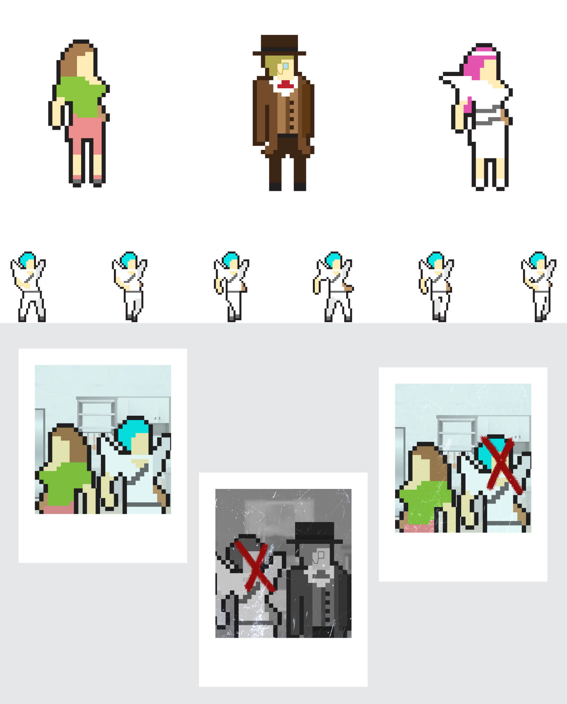
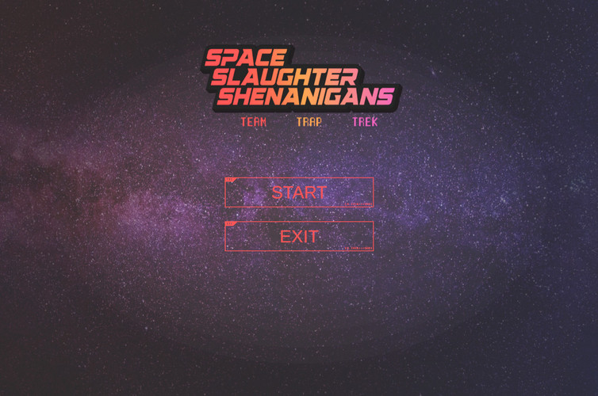
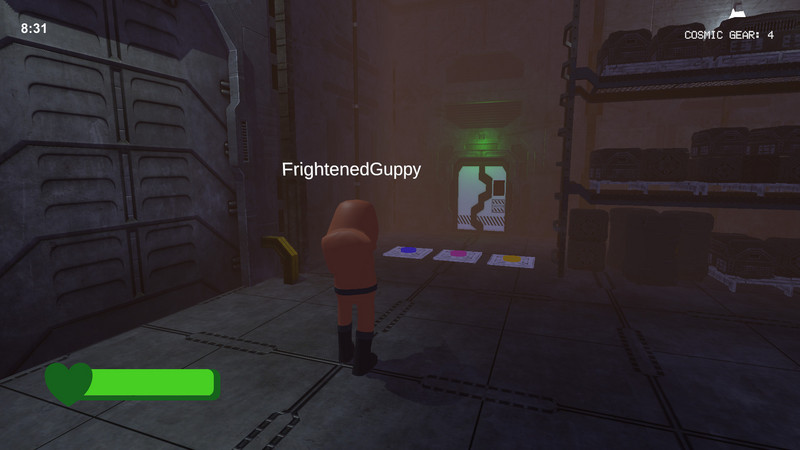
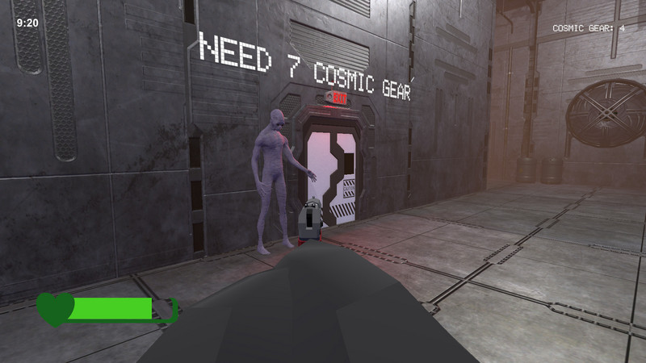
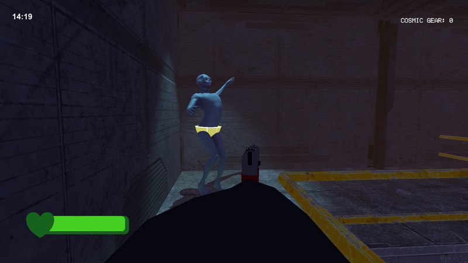

2023
GGJ 2023 Pictorial Time 2D Game
Theme: ROOTS
Travel back in time to discover the root of your family's dark secret... In this platformer game, you will travel time in your family house to discover the origin of a strange photograph you found in your attic.
Characters and assets are created using Adobe Photoshop and Illustrator
Game Main Menu Design
Screenshots from the game

Characters and assets
Attic level | Future Kitchen | Future Livingroom | Present Livingroom
2024
GGJ 2024 - Space Slaughter Shenanigans: Team Trap Trek
Theme: MAKE ME LAUGH
Compete with your friends to escape a deadly spaceship. Solve puzzles; avoid traps; forge your allegiances. Be it through untimely deaths, funny traps or unusual circumstances; this game is sure to be a great laugh for you and your mates!
I planned and desgined the level map in Unity for the game
Game Main Menu Design

Start Screen

main Task

Funny Pose
2025
GGJ 2025 - Burst My Bubble
Theme: BUBBLES
Tap your screen or smash that spacebar to keep your musical bubble afloat—and whatever you do, don’t let it hit the sharp pins! Simple, chaotic, and rhythm-fuelled fun that’s bound to get competitive fast.
This web game was developed solo in Unity, in collaboration with the brilliant composer Max Davies, using one of his original pieces as the game's soundtrack.
Game Main Menu Design